Genel Kültürünüzü Arttıracak Kısa Bilgiler
Toblerone logosundaki dağın içine gizlenmiş, ayakta duran bir ayı figürünün olduğunu biliyor muydunuz?
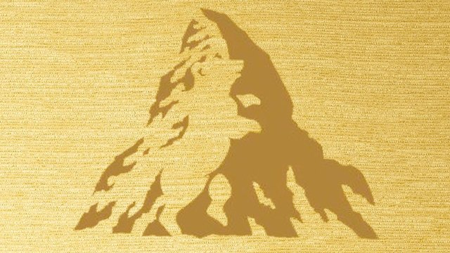
Dünyadaki ilk siyahi pilot Türk'tür ve adı Ahmet Ali Çelikten'dir.
Sivrisineklerin de dişleri vardır.
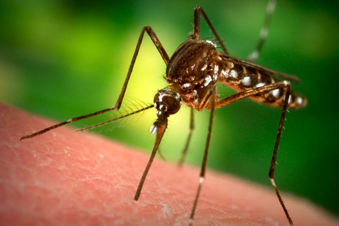
Dünya üzerinde keşfedilmiş en dayanıklı canlı Tardigrad'dır. Bu canlı, vakumlu uzay ortamında 10 gün hayatta kalabilmektedir.
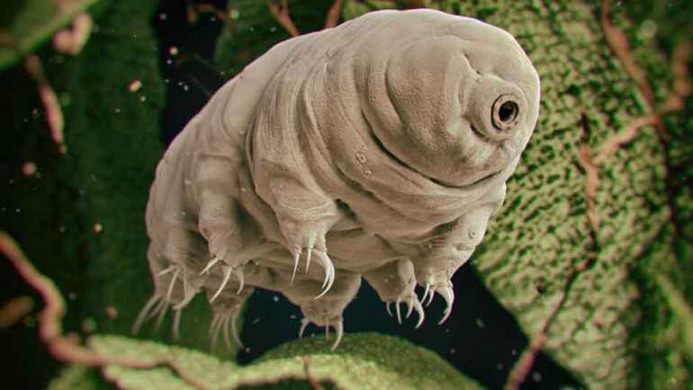
Satürn'ün zarif halkaları katı kuşaklar değildir. Bu halkalar, birbirinden ayrı toz ve buz parçacıklarından oluşmaktadır.
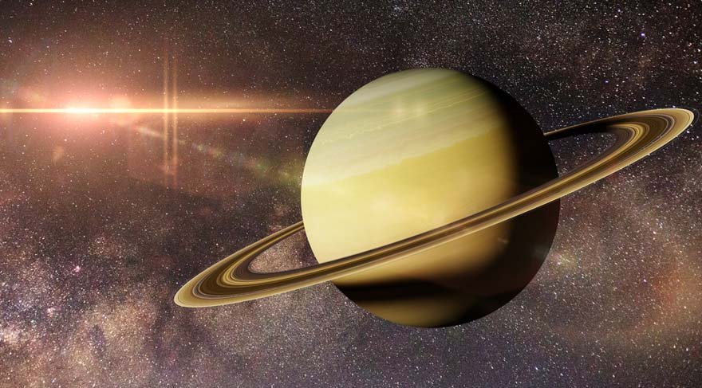
İnsanlar hayatları boyunca iki set dişe sahip olurken köpek balıkları 40 set dişe sahip olurlar.
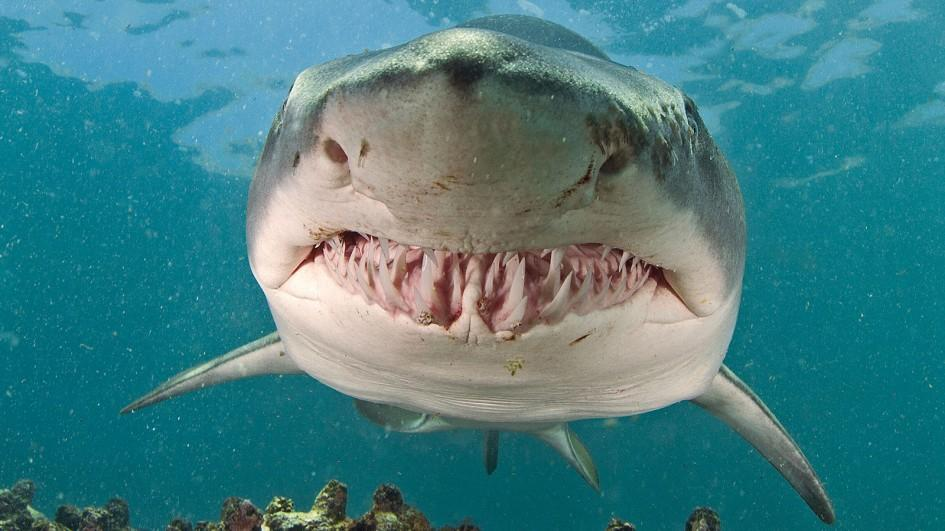
Dünya'da üretilen en pahalı yapı, yapımı için 150 milyar dolar harcanmış olan Uluslararası Uzay İstasyonu'dur.
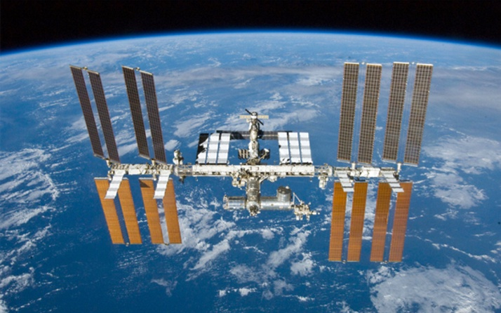
Bir günde 24 saat yoktur. Doğrusu, 23 saat 56 dakika 4 saniyedir.
Dünya etrafında 22.000 dolaylarında uydu dolanmaktadır. Bunların sadece yüzde 5'i çalışmaktadır, yüzde 8'inin yakıtı bitmiştir, yüzde 87'si ise bozuktur ya da çalışmamaktadır.
Dünya'daki suların yüzde 97'si tuzlu, yüzde 3'ü tatlı sudur.
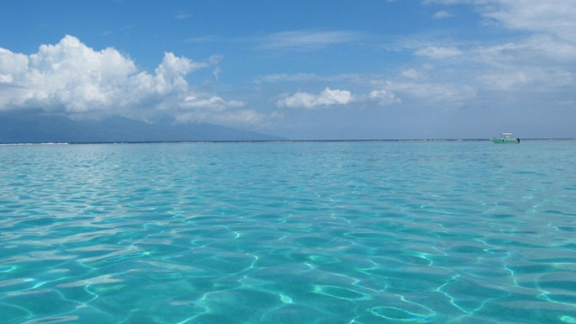
Tüm GTA afişlerinin sol üstünde helikopter bulunmaktadır.
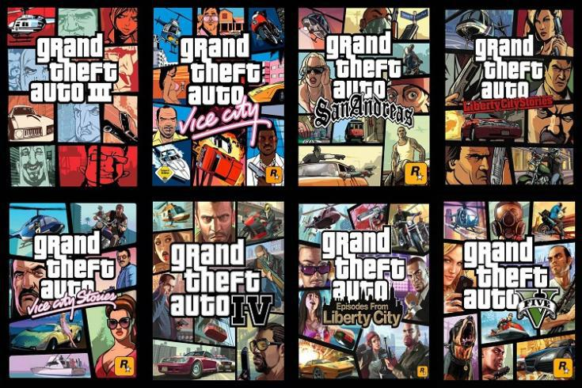
Devekuşlarının gözleri beyinlerinden büyüktür.
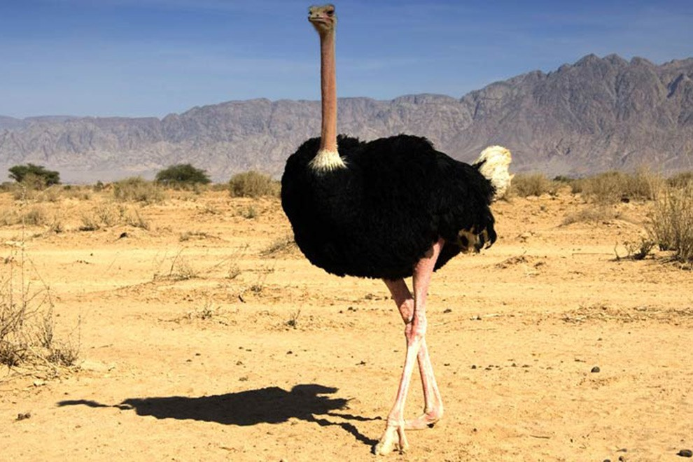
İnsan DNA'sı %50 oranında muz DNA'sı ile aynıdır.
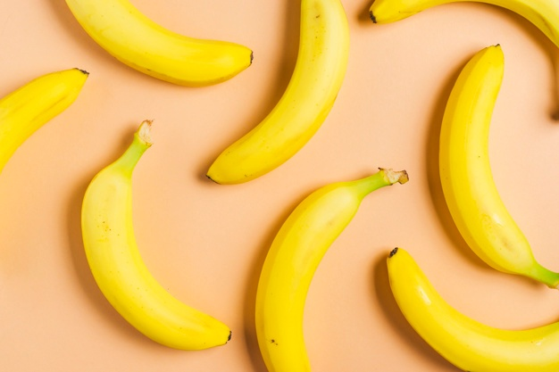
Coca Cola renklendirici kullanıyor. Kolanın gerçek rengi yeşildir.
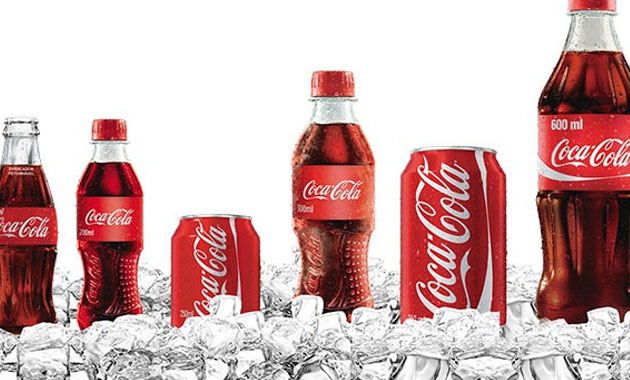
Kutup Ayılarının solak olduğunu biliyor muydunuz?
Arıların başlarının üzerinde 3 küçük, ön tarafta ise 2 büyük olmak üzere toplam 5 gözleri bulunmaktadır.
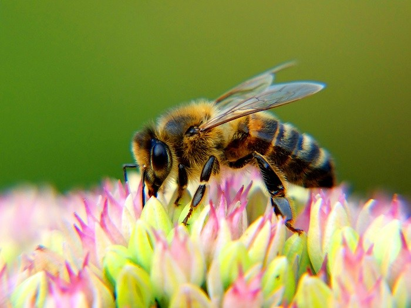
Yin Yang motifi sanıldığının aksine ilk olarak Çin'de değil, Roma'da görülmüş.
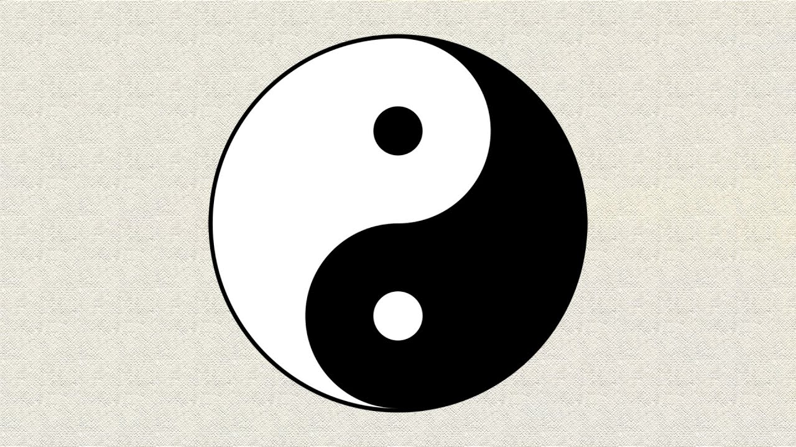
Bir Zürafa dili ile kulaklarını temizleyebilir.
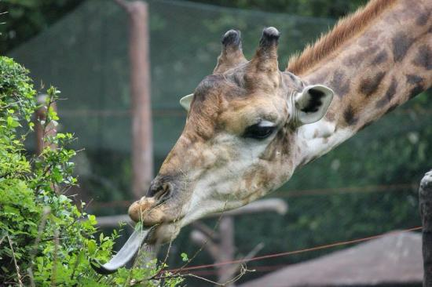
Burun ve Kulaklarımız hayatımız boyunca büyümeye devam ederken gözlerimiz hiç büyümez.
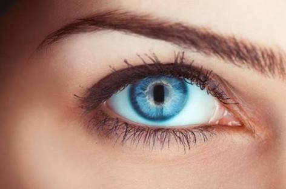
Timsahlar dillerini dışarı çıkaramazlar.
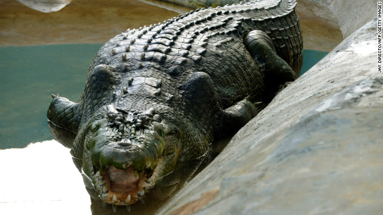